PlantMood is your online plant shop. Customers can browse your plants, view details and prices, and place an order that is sent to you on WhatsApp for payment and delivery. Behind the scenes, you have a private Admin Panel where you manage your products, see incoming orders, and update the words and photos on your website — all without needing a developer for everyday changes.
Who should use this tutorial
This guide is written for the shop owner or staff member who will manage the PlantMood website day to day. No coding or technical background is needed. If you can use email and WhatsApp, you can use this admin panel.
Section 2
Website Overview
The PlantMood website has two sides:
The public website — this is what your customers see when they visit your site: the homepage, the shop, plant detail pages, and the checkout.
The Admin Panel — a private area only you (and anyone you share the password with) can access, at the web address /admin. This is where you manage everything on the public website.
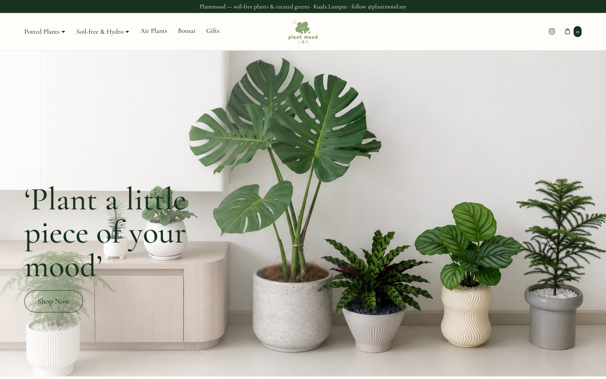
The public homepage — the first thing a customer sees.
Every product, price, photo and block of text a customer sees on the public website is controlled from the Admin Panel. Think of the Admin Panel as the “backstage” of your shop, and the public website as the “shop floor.”
Section 3
Customer Side Guide
This section explains what your customers experience, so you understand the journey they go through before an order reaches your WhatsApp.
How visitors browse the website
A visitor can browse plants from the homepage (scrolling down shows a “Featured Products” section, plus photo sections for different plant styles), or open “Shop” in the top menu to see the full catalogue. On the Shop page, they can tap a category button (for example “Air Plants” or “Bonsai”) to filter to just that type of plant.
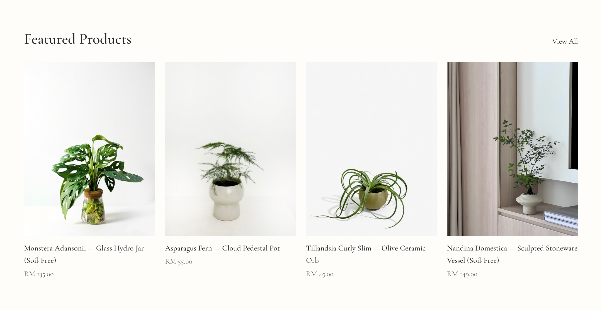
The “Featured Products” section on the homepage.
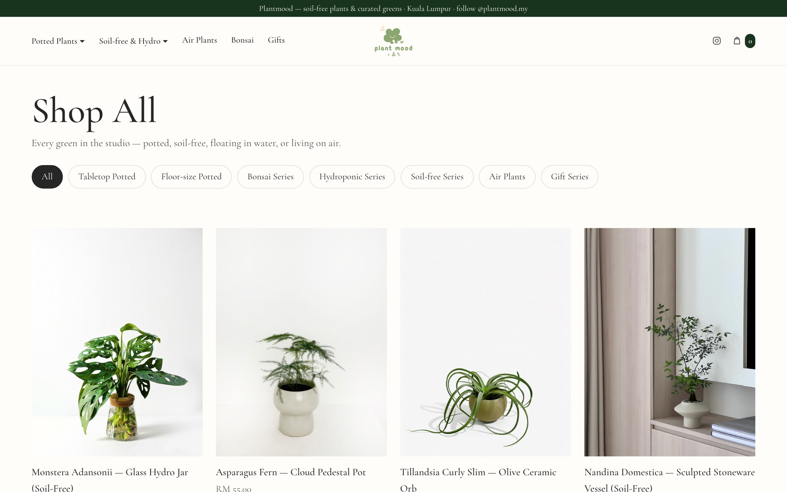
The Shop page, with category filter buttons.
How visitors view a plant
Tapping any plant photo opens its detail page: a larger photo, the price, a description, a care tip, and an “Add to Cart” button. If a plant is sold out, the button is replaced with a “Sold out” label and customers cannot add it to their cart.
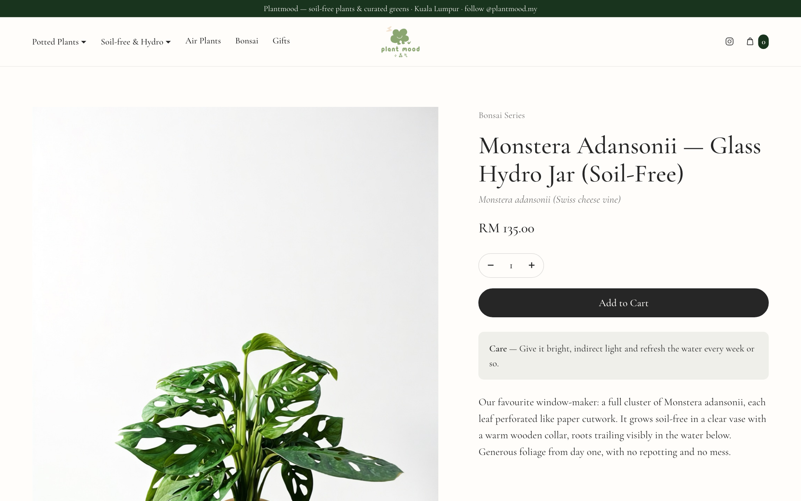
A plant detail page, with description, care tip and Add to Cart.
How visitors order through WhatsApp
PlantMood does not take payment on the website itself. Instead, an order is confirmed with the customer directly on WhatsApp. The steps a customer follows are:
Add one or more plants to their Cart.
Open the Cart and tap “Checkout.”
Fill in their name, phone, email and delivery address.
Tap “Place Order & Send on WhatsApp.”
The website saves their order and shows a confirmation page with a green “Send my order on WhatsApp” button, already filled in with their order number, items and total.
The customer taps that button, which opens WhatsApp with the message ready — they just tap Send.
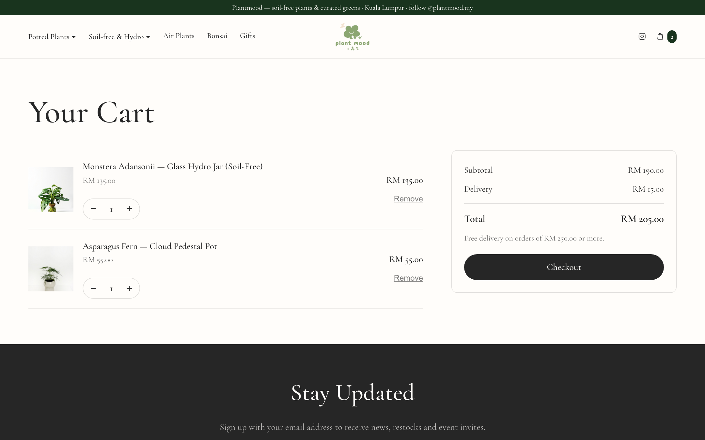
The Cart page — plants added, with the Checkout button.
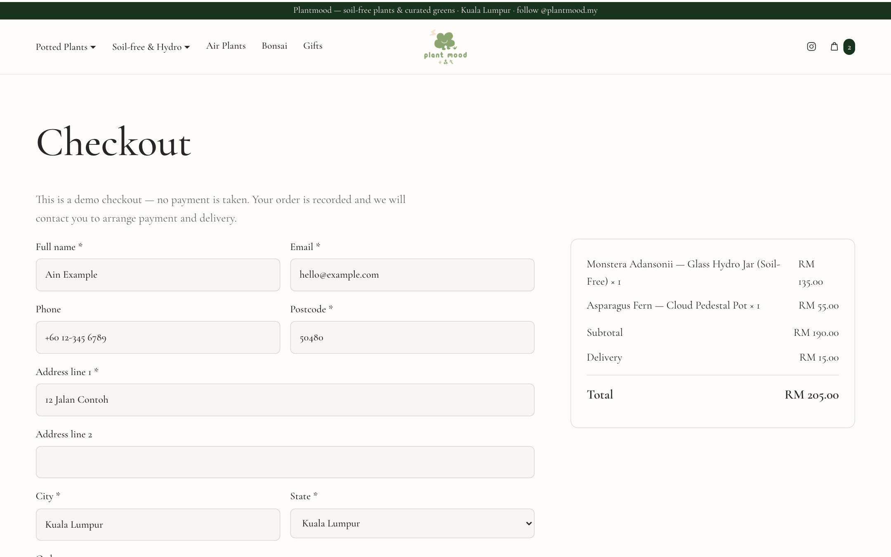
Checkout — the customer fills in delivery details, then places the order.
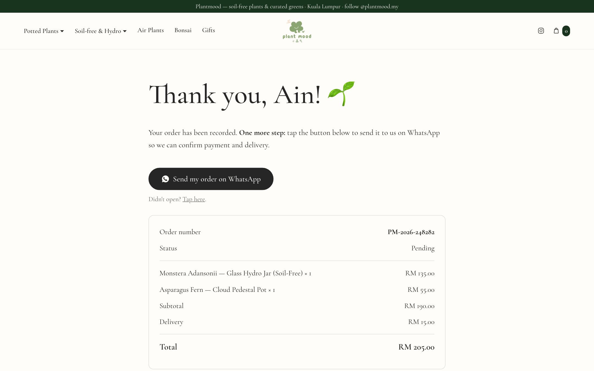
The order confirmation page, with the “Send my order on WhatsApp” button.
At the same time, the order is automatically recorded in your Admin Panel under the Orders tab — so even if a customer forgets to tap Send in WhatsApp, you still have a record of what they tried to order.
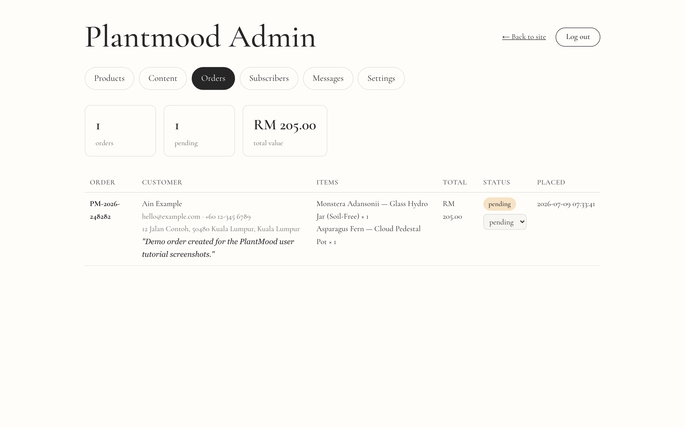
The Orders tab — every order is recorded here automatically.
Customers can also reach you without placing an order, using the Contact page for general questions — for example about bulk orders or plant care.
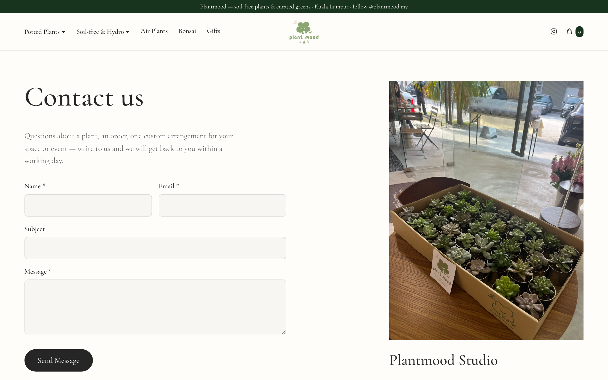
The Contact page, for general enquiries that are not tied to an order.
Section 4
Admin Login Guide
How to access the admin login page
Go to your website address and add /admin at the end — for example, yourwebsite.com/admin. You can also tap “Back to site” from inside the admin panel to return to the public website at any time.
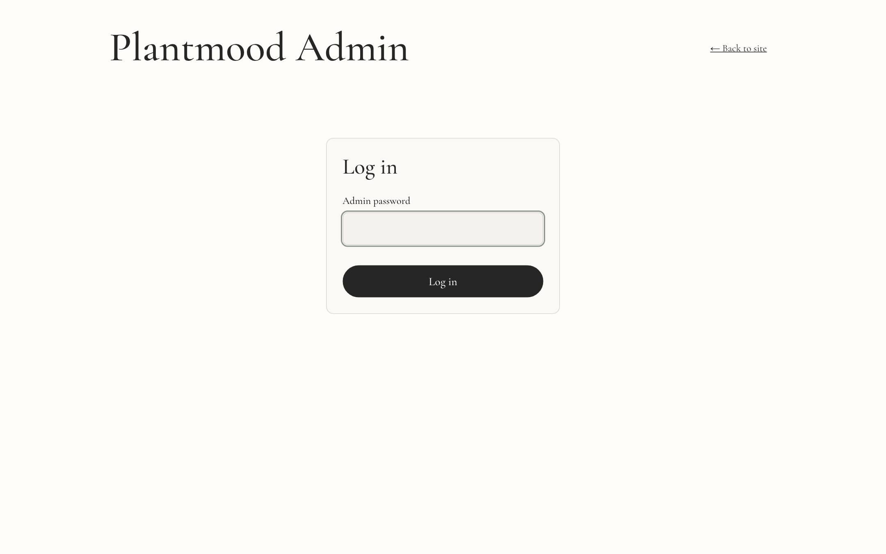
The admin login screen.
How to log in
Open the /admin page.
Type your admin password into the password box.
Click “Log in.”
Once logged in, you stay logged in for several hours, even if you close and reopen your browser tab. A “Log out” button appears at the top right whenever you are logged in.
What to do if login fails
Check that Caps Lock is not on — passwords are case-sensitive.
Check for extra spaces before or after the password.
If you are sure the password is correct and it still fails, the password may have been changed by someone else on your team.
Section 5
Admin Dashboard Guide
What the dashboard is for
After logging in, you land on the Products tab. Across the top of the admin panel are six tabs — click any tab to switch to that section. Your changes in one tab are saved independently of the others, so you can move between tabs freely.
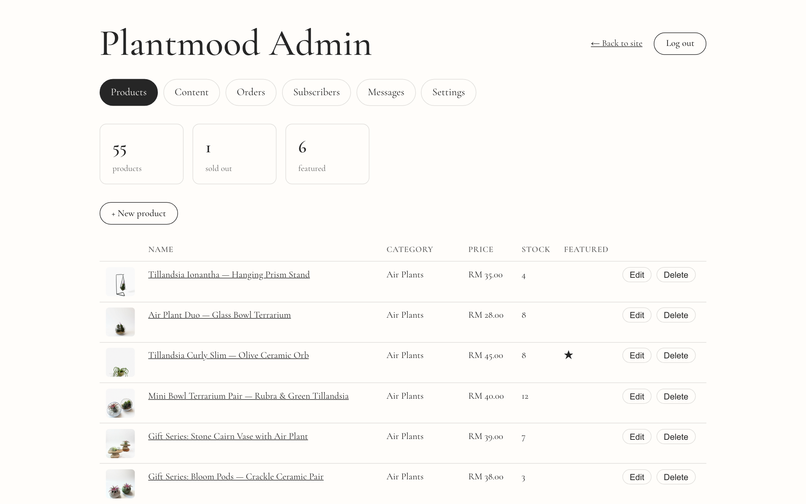
The admin panel, showing the tab bar and the Products tab.
How to navigate the admin panel
Tab
What it is for
Products
Add, edit, delete plants, and manage prices, stock and photos (by path).
Content
Edit the text and photos that appear on your homepage and other pages.
Orders
See every order placed on the website and update its status.
Subscribers
See everyone who signed up to your newsletter.
Messages
See messages sent through the Contact page.
Settings
Set your delivery fee, WhatsApp number, and change your admin password.
Section 6
Managing Products / Plants
How to add a new plant/product
Go to the Products tab.
Click “+ New product.”
Fill in the fields: Name, Species, Price, Stock, Category, Image path, Description, Care hint, and Alt text (a short description of the photo, used for accessibility).
Tick “Featured on homepage” if you want this plant to appear in the Featured Products section of the homepage.
Click “Create product.”
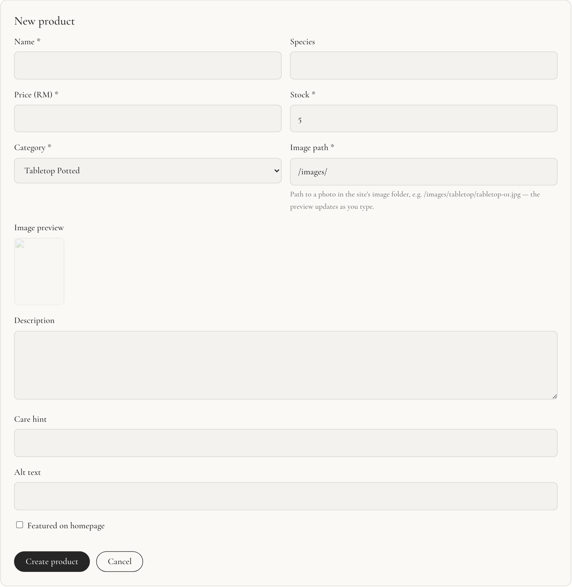
The “New product” form.
How to edit a plant/product
Go to the Products tab.
Find the plant in the list and click “Edit” next to it.
Change any field — name, description, price, stock, category and so on.
Click “Save changes.”
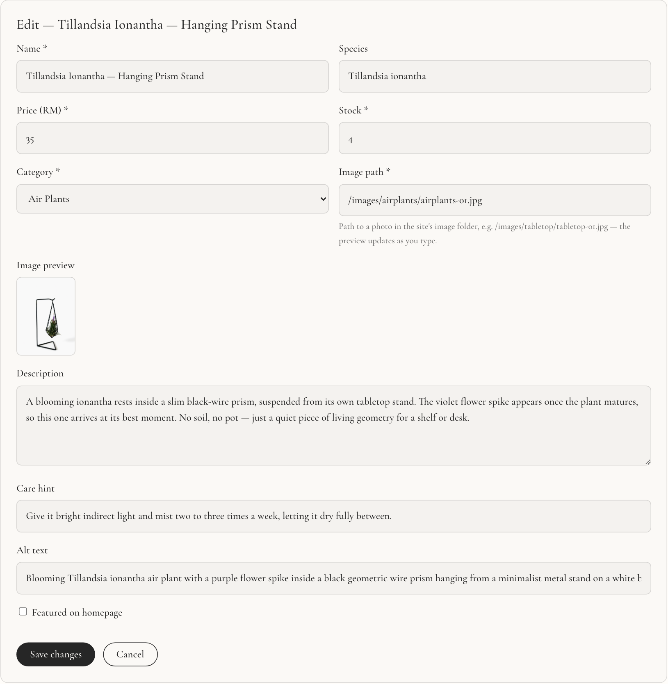
Editing an existing plant — the same form, pre-filled.
How to set or replace a product photo
To use a brand-new photo (one that has never been uploaded to the website before) for a product, ask your website developer to add the photo file to the website and give you its path to paste in. This is different from the Content tab in Section 7, where you can upload photos yourself directly from your device.
How to delete old/replaced images
How to remove a plant/product
Go to the Products tab.
Click “Delete” next to the plant you want to remove.
Confirm when asked — this cannot be undone.
Section 7
Managing Website Text and Images
The Content tab is where you edit the words and photos that make up your homepage and a few other pages — the hero banner, the feature cards, the About page photo, and more. Everything is grouped into sections, matching the order they appear on the actual page.
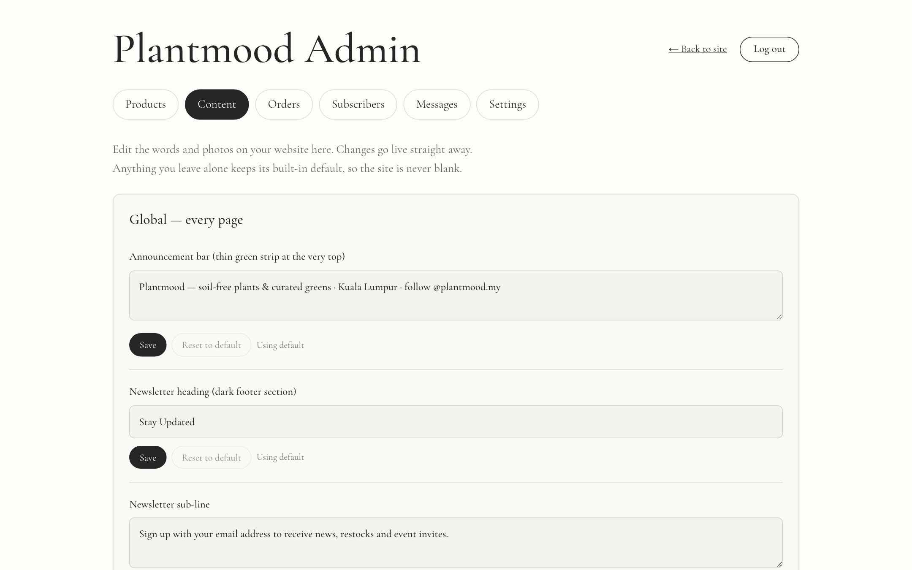
The Content tab, grouped by page section.
How to update a photo
Find the photo you want to change (each one is labelled, e.g. “Hero photo 1”).
Read the grey hint text under the label — it tells you the best shape/size of photo for that spot.
Click “Choose File” and pick a JPG, PNG or WebP photo from your device (maximum 6 MB).
Click “Upload new photo.”
How to edit text
Find the text field you want to change.
Click into the box and type your new text, replacing what is there.
Click “Save.”
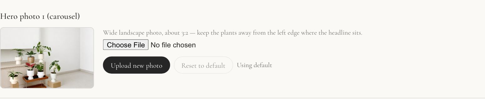
A photo field — upload, reset, and status label.
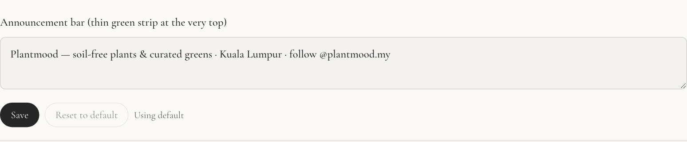
A text field — save, reset, and status label.
How to save changes
Every field saves on its own — click “Save” for text, or “Upload new photo” for images. There is no separate “Publish” step: the moment you click Save or Upload, the change is live on your website.
“Using default” vs. “Custom”
Next to each field you will see a small label: “Using default” means the website is showing its original built-in text or photo. “Custom” (shown in orange) means you have changed it. Click “Reset to default” at any time to undo your change and return to the original — this also works as the way to remove a photo you uploaded, since it puts the original photo back in its place.
How to check the result on the live website
Open a new browser tab.
Go to your website’s normal address (not /admin) and visit the page you changed.
If you don’t see your change immediately, refresh the page (see Troubleshooting in Section 8).
Section 8
Common Mistakes and Troubleshooting
Problem
Likely cause
What to do
Image not changing
Your browser has an old copy of the page saved (“cached”).
Hard-refresh the page: Cmd+Shift+R on Mac, or Ctrl+F5 on Windows.
Image not changing (product)
The “Image path” was typed incorrectly.
Re-open the product in Edit mode and check the preview image appears — if it looks blank/broken, the path is wrong.
Wrong text displayed
The wrong field was edited, or the text was edited on a different tab/section than expected.
Go back to the Content tab and check you are editing the field under the correct section heading.
Login failed
Wrong password, Caps Lock on, or extra spaces typed.
Retype carefully. If it still fails, see Section 4 — there is no self-service password reset.
Changes not showing immediately
You typed a change but did not click Save/Upload/Create.
Go back and confirm you clicked the button — a small confirmation message appears briefly at the bottom of the screen when a save works.
Website layout looks odd after uploading a photo
The photo’s shape (landscape vs. square vs. portrait) does not match what that spot expects.
Re-read the grey hint text under that photo field, and upload a photo closer to the suggested shape.
Section 9
Best Practices
Recommended image size — keep uploaded photos under 6 MB (the website will reject anything larger). For faster loading, aim well below 1 MB per photo where possible, and always check the shape hint shown under each photo field.
Use clear product names — write names the way a customer would search for them, e.g. “Monstera Deliciosa — Medium” rather than an internal code.
Keep descriptions short and readable — two to three short sentences work better than a long paragraph. Mention the one or two things that matter most (light needs, size, or what makes it special).
Check the mobile view after updates — most customers browse on their phone. After changing a photo or text, open the website on your own phone (or resize your browser window narrower) to make sure it still looks good.
You do not need to “clean up” unused photos — as explained in Section 7, the website automatically removes an old uploaded Content photo when you replace or reset it.
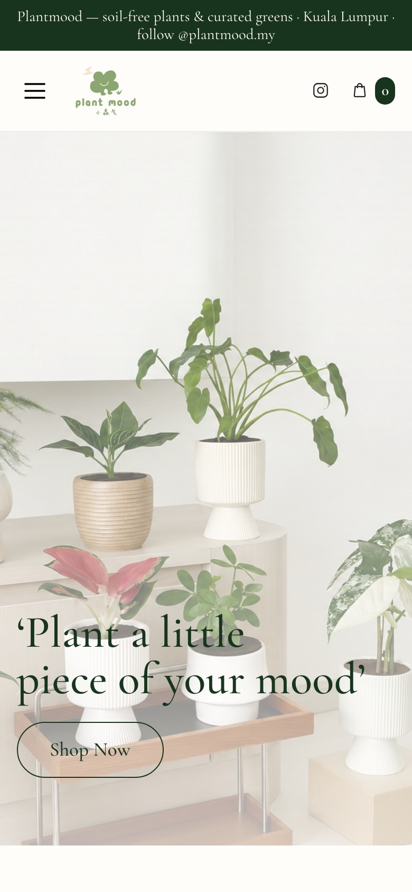
The homepage on a phone-sized screen.
Section 10
Final Checklist
Before you consider a website update finished, run through this quick list:
I opened the actual website (not just the admin panel) and confirmed the change looks right.
I checked how the change looks on a phone-sized screen.
For a product change: the price and stock number are correct.
For a product change: the photo shown is the correct plant.
For a text/photo change: the “Custom” label is showing (confirming it saved).
My WhatsApp number in Admin → Settings is correct and I am actively checking that number for new orders.
My admin password is only shared with people who should be editing the website.
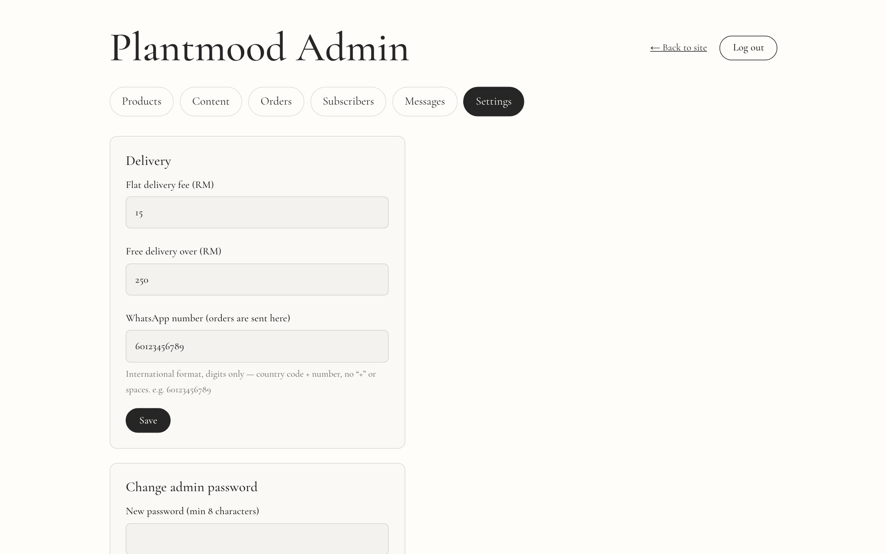
Settings — delivery fee, WhatsApp number and admin password.
That’s it — you now know everything needed to run your PlantMood website day to day. If you ever hit something this guide doesn’t cover, that likely means it needs a developer’s help rather than something in the admin panel.